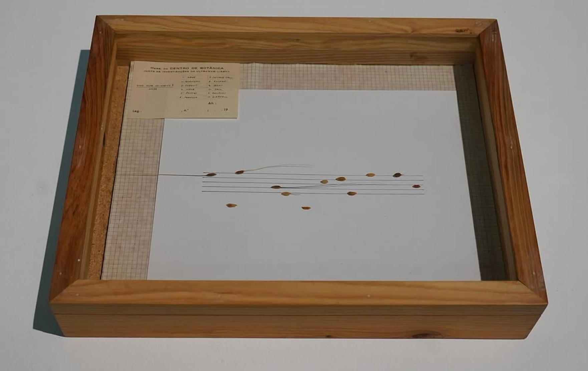
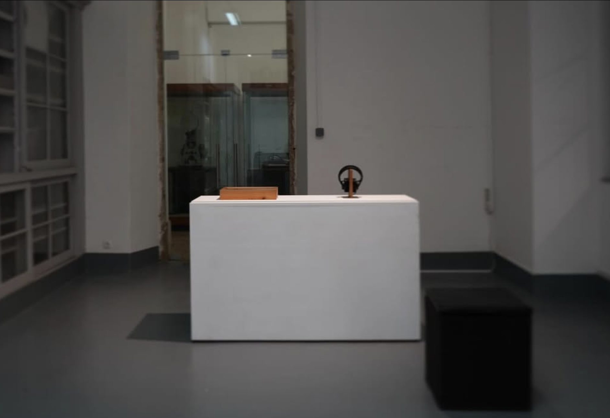
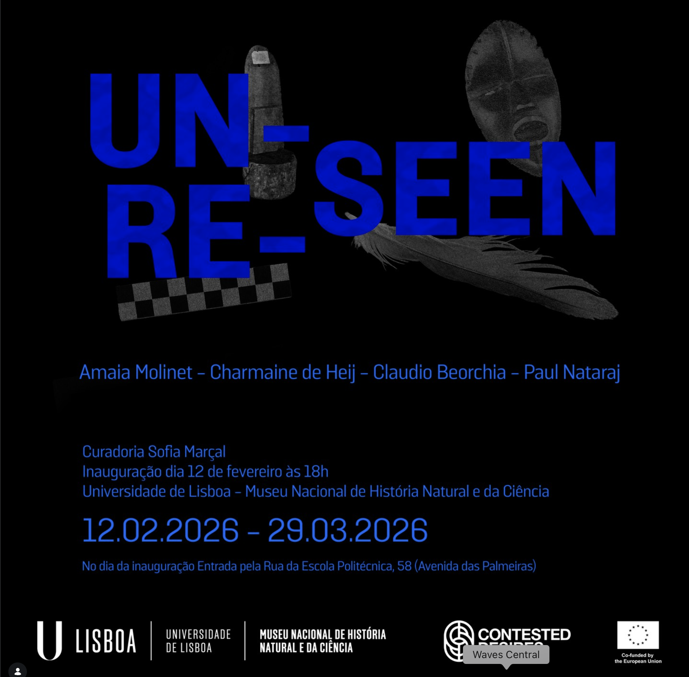

David Leith :: Work :: Lisbon Project

Collaborative sound piece for Paul Nataraj’s Good Hope Solidarity Score, shown as part of the Contested Desires project at Museus Universidade Lisboa.

Quote by Paul Nataraj (@paul_stan_nataraj):
“This triptych is firstly an ‘NEILA’ stamp which was made during my residency in Budapest and used as part of ‘We Sound Each Other’ installation in Newcastle. I was also hugely luck and forever grateful to have been able to work in the herbarium at the museum. I spent time with the amazing staff there researching records of rice plants which had been collected in Goa by Portuguese scientists. On each of these records a vernacular name had been captured. However, it was made very clear in the documentation that thesenames would be changed when ‘proper’ scientific names were found. This seemed to fully sum up the arrogance of colonialism, whilst also speaking to issues around the colonial legacies of the politics global crops and famine. So this piece uses individual rice seeds to make up the ‘Good Hope Solidarity Score’ and reclaims the vernacular names. Lastly there is a collaborative sound piece which draws together works from the following amazing people responded to the open call. These works are brought together with field recordings from Goa and Terreiro do Paço, Paco los Negros, Padrão dos Descobrimentos, in and around Lisbon, all of which have close links to the slave trade. I was also given the beautiful opportunity to meet some amazing wood samples in the Botanic Gardens who again gave me their vernacular names and agreed to become drums in the work. This piece will hopefully be available to listen to soon.”
This work is by @arthousesubzero, @jwllrs_, @stevenbrownartist, @lizziekingartist, @collapsingdrums, @fadobicha, @algy_behrens_music, @masks_sculpture_performance, @framazza, @luigimorleomusic, @martyn_riley_sound, @chelidonframe, @nomad.homestead, @devinashercohen, @william_graham_randles, @amaiamolinet, @defectiveobjective, @jondistefano, @petriear, Mhairi-Jean Ross, Sophie Kenyon, @daveleithgaliano, Brenda Rosete and Pablo Jimenez-Moreno.

2026